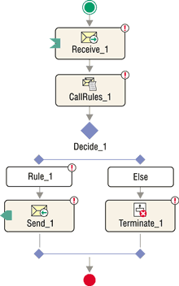
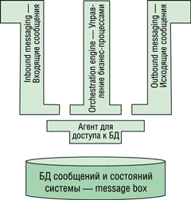
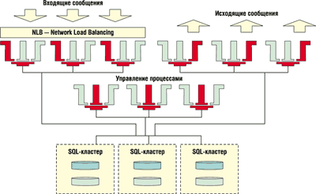
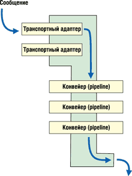
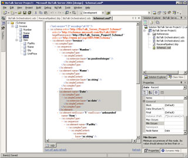

Элдар Мусаев,
к.ф.-м.н., доцент,
менеджер программ подразделения Business Process and Integration Division компании
Microsoft
По мере роста и развития корпоративной информационной инфраструктуры нередко оказывается, что отдельные ее подсистемы, такие, как бухгалтерия, отдел кадров, отдел продаж, выросшие из небольших и, как правило, разнородных приложений, "говорят на разных языках", используют разные протоколы и форматы данных. Даже если исходно это было готовое решение, а не разработанное внутри компании, все равно высоки шансы, что программные продукты были куплены у разных фирм и потому слабо "понимают друг друга". Группа задач, решающих эти проблемы, объединяется под названием Enterprise Application Integration (EAI) - интеграция систем (приложений) предприятия.
Когда же разные системы начинают понимать друг друга, возникает проблема автоматизации различных процессов, от технологических и синхронизации коммуникационных протоколов до бизнес-процессов, в первую очередь процессов документооборота (например, автоматизации процесса продаж - от получения заказа до контроля платежа и доставки товара, оформления и утверждения внутренних документов), следования процедурам ISO 9000 и т. п. Особое значение приобретают процессы ad hoc, которые могут меняться в ходе исполнения (в зарубежной литературе их также часто называют human-oriented workflow). Эта группа задач относится к управлению бизнес-процессами, или workflow management.
Именно эти две группы задач - EAI и workflow management - и призван решать BizTalk Server. Выпущенная недавно версия BizTalk Server 2004 обеспечивает еще более мощное, быстрое и экономичное решение, чем ее предшественники, BizTalk 2002 и BizTalk 2000, которые, впрочем, уже тогда позволяли решать многие задачи интеграции без написания единой строчки кода. Статьи об этих версиях BizTalk Server были опубликованы в свое время в "BYTE/Россия" (см. № 2'2001и № 5'2002). Что же нового появилось в версии BizTalk 2004?
В статье, посвященной BizTalk Server 2002, в сервере строго выделялись две подсистемы - messaging, занятая обработкой сообщений, и orchestration, автоматизирующая процессы. Это было справедливо, поскольку подсистемы были действительно несколько разделены (например, сообщения передавались от одной подсистемы к другой при помощи MSMQ). В BizTalk Server 2004 автоматизация формализованных бизнес-процессов (orchestration) была полностью переписана на коде .NET (managed) и интегрирована с системой обработки сообщений, что упростило работу с системой и увеличило производительность сервера.
Существенно улучшилась и поддержка автоматизированных бизнес-процессов во всех остальных частях продукта. В их числе полностью новые средства разработки и описания бизнес-процессов - Orchestration Designer, интегрированный в Visual Studio, поддержка Web-сервисов в обе стороны, мощный pub/sub-механизм маршрутизации, улучшенные средства мониторинга выполнения автоматизированных бизнес-процессов, поддержка стандартного языка описания бизнес-процессов BPEL (об этом будет рассказано ниже).
Значительно улучшенный и расширяемый трекинг состояния системы (Health Activity Tracking, HAT) позволяет обнаруживать, отслеживать и расследовать технические проблемы в системе в реальном времени.
Human Workflow Services
Human Workflow Services (HWS) обеспечивают поддержку ad hoc (или human-oriented) бизнес-процессов, отличающихся тем, что они могут меняться в ходе выполнения. Например, на определенном этапе было одно задание, а потом стало три, поскольку сотрудник решил послать документ двум коллегам на просмотр. Классические формализованные бизнес-процессы не очень хорошо приспособлены для учета подобных спонтанных изменений, а HWS позволяет с ними работать.
HWS надстроена над системой выполнения формальных бизнес-процессов и работает с заданиями (tasks), которые часто сами представляют собой отдельный формальный бизнес-процесс. Используя такой подход, HWS оказалась способна определить многие стандартные действия, которые человек может пожелать сделать с заданием, - послать на просмотр, поручить выполнение кому-нибудь другому, дать знать начальнику, что задание застопорилось безрезультатно. Подобный подход позволяет автоматизировать достаточно сложные сценарии документооборота - наиболее популярного вида бизнес-процесса ad hoc.
Интерпретатор бизнес-правил BRE
Встроенный интерпретатор бизнес-правил (Business Rules Engine, BRE) позволяет сделать автоматизированные бизнес-процессы значительно динамичнее. Предположим, что в процессе выплаты командировочных расходов суммы до 3000 рублей утверждаются одним человеком, а суммы свыше этого требуют утверждения начальником и главным бухгалтером. Описать такой бизнес-процесс не составляет большого труда. Теперь допустим, что правила изменились, и все расходы, кроме ресторанов, в сумме ниже 2000 рублей утверждаются одним человеком, а расходы на рестораны всегда требуют дополнительного утверждения. Что делать? Изменять исходный код и перекомпилировать проект? Если бы еще изменилась только сумма, то ее можно было бы сделать параметром, но в этом примере правило меняется более сложным и, вообще говоря, непредсказуемым образом. Заложить подобную гибкость в программу вручную практически невозможно. Для решения этой проблемы и существуют бизнес-правила.
Работают бизнес-правила очень просто. В месте автоматизированного бизнес-процесса, где принимается решение, вызывается бизнес-правило, и оно определяет, требуется дополнительный этап утверждения или нет. Кстати, вызов правил - это стандартный шаг, подбираемый с палитры компонентов, никакого кода для этого писать не требуется (см. пример ниже). А само бизнес-правило находится в отдельной базе данных, а не в программе. Поэтому когда правило изменяется, его достаточно изменить в базе данных, и все автоматизированные бизнес-процессы тут же начнут применять новое правило.
У такого подхода есть и еще одно преимущество - менеджмент имеет возможность напрямую видеть те правила, которые работают в организации. Понятно, что если правила спрятаны в исходном коде, то они практически недоступны для руководителей и большинства бизнес-пользователей. BRE позволяет им не только легко проверить, каковы текущие правила, но и изменить эти правила (если они имеют на это право), минуя посредников в виде программистов и администраторов системы.
Business Activity Monitoring
Business Activity Monitoring (BAM) позволяет отслеживать бизнес-процессы в реальном времени, равно как и использовать OLAP-сервис, поставляемый вместе с SQL Server 2000, для более глубокого анализа данных. По сути BAM для бизнес-пользователя - это то же самое, что трекинг для системного администратора, просто собираются не технические данные, а относящиеся к бизнесу. Эти данные отвечают на такого рода вопросы: "сколько покупателей сделало сегодня заказ?", "сколько людей было в деловой поездке в прошлом месяце?" и т. п. А интеграция с OLAP позволяет применять к накопленным данным методики data mining и business intelligence.
Интересный пример использования BAM описан в публикации [3]. Используя Microsoft BizTalk Server 2004, SQL Server 2000 Analysis Services и Windows SharePoint Services, компания Virgin Group, крупнейшая сеть магазинов музыкальной и развлекательной продукции, сумела поднять раскрываемость краж в своих магазинах на 50% уже в первый месяц использования системы. BizTalk Server отслеживал работу магазина в реальном времени, BAM передавал эти данные в OLAP-сервер, который проводил анализ данных и при выявлении подозрительной деятельности тут же информировал менеджера магазина по электронной почте и пейджеру.
Интеграция с Microsoft Office
InfoPath
Дополнительные удобства для бизнес-пользователей создаются за счет интеграции с последней версией Microsoft Office. Новый продукт в составе Office, InfoPath, позволяет работать с партнерами в формате XML и может выполнять по отношению к BizTalk Server ту же функцию, что и Outlook по отношению к Exchange Server (см. [4]). Заполненную форму прямо из InfoPath можно отправить в BizTalk. Конечно, взаимодействие человека и бизнес-процесса в BizTalk может осуществляться и многими другими способами - HTML-страница, электронная почта, просто файл, - но InfoPath предоставляет несколько важных преимуществ.
Простота для пользователя. Пользователь просто открывает документ InfoPath, заполняет его и нажимает кнопку. В отличие от HTML-страницы, можно сохранить частично заполненную форму и вернуться к ней позже. Пользователю не нужно запоминать адреса, он просто открывает файл, который может лежать среди его типовых документов и потому создается простым выбором File | New | Select template.
Простота для разработчика. Разработчик формы просто готовит ее в InfoPath (это примерно то же самое, что редактировать документ в Microsoft Word) и среди прочего сообщает, что это форма для вызова Web-сервиса. Затем он задает URL, и InfoPath сам запрашивает Web-сервис о том, какие данные и в какой схеме он ожидает. После этого разработчик выбирает те поля данных, которые пользователь должен будет вводить, и перемещает их мышкой в создаваемую форму. Документ готов к работе. Все создание документа InfoPath занимает буквально две-три минуты. С точки зрения разработчика бизнес-процесса такой способ ввода данных ничем не отличается от обычного Web-сервиса, что означает для него просто установку пары атрибутов на порте и задание правильной схемы. Кстати, все порты для автоматизированных бизнес-процессов в BizTalk описываются на WSDL - языке описания Web-сервисов. Заметим, что ни одной строчки кода при этом писать не требуется ни на одной из сторон.
Простота для администратора. Установка среднего автоматизированного бизнес-процесса занимает несколько минут. После этого пользователям дается документ InfoPath, и система готова к работе. Наличие Web-сервиса позволяет легко обнаруживать и предотвращать использование устаревших InfoPath-документов.
InfoPath предоставляет мощные средства для создания форм, делающие этот процесс менее трудоемким, чем с помощью HTML или иных технологий.
Наиболее впечатляет то, что описанный выше процесс - это результат не столько сознательной интеграции BizTalk и InfoPath, сколько сознательной поддержки в BizTalk, Visual Studio и InfoPath таких общих стандартов, как XSD, WSDL и SOAP.
SharePoint Services
Так же, как с InfoPath, BizTalk хорошо работает вместе с SharePoint Services (SPS) - частью Windows Server 2003. SPS позволяет легко и быстро создавать внутренние сайты, состоящие из типизованных элементов (библиотеки документов, различные списки, доски объявлений и т. д.). Как и InfoPath, SharePoint Services дает удобный способ для взаимодействия человека с автоматизированным бизнес-процессом, одновременно добавляя удобства коллаборативного окружения и распределенного доступа.
Visio
Еще одна сторона интеграции с Office связана с тем, что сохранена способность описывать бизнес-процессы в Visio, а затем использовать документ Visio для генерации (импорта) в Visual Studio для построения полноценного проекта. Хотя главным средством для создания автоматизированных процессов в BizTalk 2004 остается Visual Studio, возможность использования Visio полезна для бизнес-аналитиков, имеющих предубеждение против средств, ориентированных на разработчиков.
Visual Studio
Интеграция с Visual Studio значительно упрощает разработку проектов для BizTalk Server 2004. Для автоматизации бизнес-процессов используется классический графический интерфейс, напоминающий UML или Visio (рис. 1). Разработчик просто подбирает на палитре компонентов стандартные шаги и средства группировки шагов процесса, такие, как "принять сообщение", "отправить сообщение", "вызвать бизнес-правило", "принять решение", "транзакция", а затем выстраивает их в проекте в графическом виде.
|  | Рис. 1. Пример изображения бизнес-процесса на экране.
|
Во многих случаях бизнес-процесс удается описать без единой строчки кода. Конечно, для опытных программистов, которые чувствуют необходимость написать некоторое количество кода, всегда есть стандартный шаг Expression, позволяющий вставить в выполнение бизнес-процесса произвольный код на C#.
Примерно так же просто готовятся компоненты для преобразования сообщений при приеме или посылке - конвейеры (pipelines), о чем мы еще скажем ниже.
Установка проектов BizTalk осуществляется прямо в Visual Studio из окна BizTalk Explorer, который позволяет устанавливать, убирать и конфигурировать автоматизированные бизнес-процессы, компоненты преобразования сообщений и в целом BizTalk Server. При этом сервер вовсе не обязан находиться на той же машине, что и Visual Studio, - все конфигурирование осуществляется через сеть. Разумеется, если корпоративная политика запрещает средства разработки во внутренней части сети, можно воспользоваться отдельной конфигурационной утилитой.
Масштабируемое и отказоустойчивое ядро сервера
Это новшество, несомненно, заинтересует тех, в чьей системе нагрузка уже высока (или ожидается, что она будет высокой), равно как и всех заинтересованных в высокой надежности и доступности системы. Рассмотрим сначала структуру ядра BizTalk Server 2004 в простейшем варианте - на машине разработчика или на одном сервере (рис. 2.)
|  | Рис. 2. Схема ядра сервера.
|
Как видно из рис. 2, в центре находится message box - база данных, построенная на Microsoft SQL Server 2000 SP3, которая отвечает за маршрутизацию и хранение сообщений и состояний системы. В результате остальная часть BizTalk Server, ответственная за транспорт, обработку сообщений и управление процессами, состояния реально не имеет. Поэтому если производительности сервера не хватает, то сначала стоит разнести базу данных и всю остальную часть на разные машины. Далее можно добавлять обрабатывающие машины, пока не будет достигнута необходимая мощность.
Для большей эффективности можно разделить обрабатывающие машины на три группы: первая, спрятанная за стандартным Windows Server NLB (Network Load Balancing), отвечает за прием сообщений; вторая - за отправку сообщений и третья - за управление процессами. Если одна из этих машин по каким-то причинам отключается (например, на профилактику), остальные продолжают работать как единый сервер. Поскольку ни одна из них не хранит критического состояния, то в худшем случае отключение одной из принимающих машин приведет к неуспешной попытке передать сообщение. При этом передающая сторона будет знать об этом и либо попробует переслать сообщение заново, либо оно останется на диске для повторной попытки, как в случае с файловым транспортом. В обоих случаях один из оставшихся серверов просто подхватит это сообщение со второй попытки. В случае же отключения сервера, работающего на посылку сообщений или управление процессами, вообще ничего ощутимого не произойдет. Не отправленные из-за этого сообщения будут подобраны другими серверами, а процесс восстановится на другом сервере с последней контрольной точки.
Количество обрабатывающих машин ограничено лишь производительностью сети и базы данных. Если база данных становится сдерживающим фактором, можно добавить дополнительные машины с базой данных, расширив таким образом производительность на этой стороне уравнения. И наконец, если вас беспокоит, что сервер с базой данных может выйти из строя, то всегда можно поставить эти серверы парами в кластере - стандартная технология, поддерживаемая в SQL Server, и тогда в случае проблем второй сервер будет готов подхватить работу.
В итоге полностью масштабированная и устойчивая к отказам конфигурация выглядит примерно так, как показано на рис. 3.
|  | Рис. 3. Масштабируемая и устойчивая к отказам конфигурация.
|
Система обработки сообщений
Новая гибкая и расширяемая система обработки сообщений - включающая Adapter Framework - значительно упрощает работу с нестандартными системами, использующими экзотические протоколы и форматы сообщений. Рассмотрим подробнее принимающую (или отправляющую) сторону BizTalk Server (рис. 4.)
|  | Рис. 4. Схема приема сообщения.
|
Транспортный адаптер - это легко добавляемый компонент, который позволяет ввести новый транспортный протокол. "В коробке" с BizTalk Server 2004 уже есть несколько наиболее популярных транспортных адаптеров, например, файловый (подобрать файл с сообщением или записать сообщение в файл), HTTP, SMTP (отправить сообщение по электронной почте), MSMQ и, конечно же, SOAP (Web-сервис). Часто этого набора оказывается достаточно.
В более сложных случаях, например, с X25, который используется SWIFT и многими EDI-протоколами, есть два выхода. Прежде всего, даже если адаптер и не включен в дистрибутив, возможно, он уже есть в числе существующих адаптеров - их более трех сотен. Кстати, SWIFT для BizTalk 2004 будет скоро доступен напрямую от Microsoft в составе дополнительного продукта BizTalk Accelerator for SWIFT [5], а расширенная и более удобная поддержка стандартов EDI - через партнера Covast. Если же случай совсем уж экзотический (как читатель уже понял, не-IP сети типа X25 и такие системы, как SWIFT, EDI или HL7, экзотикой не считаются), то можно разработать такой адаптер своими силами или заказать его на стороне. Пример адаптера с исходными текстами приложен к SDK.
Конвейеры (pipelines) - вторая легко добавляемая часть системы обработки сообщений; они отвечают за разбор потока данных, преобразование его в XML, разбивку на отдельные сообщения в случае пакетной обработки и извлечение атрибутов сообщения, которые могут использоваться для его маршрутизации внутри сервера.
Если сообщения имеют формат XML или если вы не хотите разбирать сообщения вообще, можно воспользоваться тем, что включено в продукт. Даже если формат сообщений отличен от XML, все по-прежнему несложно. Дело в том, что разработка нового конвейера интегрирована в Visual Studio. Нужно просто открыть Visual Studio, создать новый проект BizTalk pipeline и положить туда несколько стандартных компонентов, которые можно взять из палитры компонентов так же, как это делается с кнопками и прочими экранными элементами в Visual Basic.
Во многих случаях для создания специализированного конвейера не придется писать ни единой строчки кода - все будут делать уже готовые компоненты, доступные на палитре. Наиболее популярный компонент для разбора не-XML форматов - flat file disassembler - позволяет разбирать весьма сложные форматы данных с помощью описания схемы. К примеру, она часто используется для различных EDI-форматов.
Если же одолеть имеющийся формат с помощью встроенных компонентов сложно, то, как и с адаптерами, есть два выхода. Во-первых, нужный компонент может быть уже доступен на рынке. Во-вторых, его всегда можно разработать своими силами или заказать на стороне. Пример с исходными текстами, естественно, приложен к SDK.
Сочетание транспортных адаптеров и конвейеров позволяет подключить к BizTalk Server практически любой протокол с любым форматом сообщений. И не стоит забывать о существовании родственного продукта HIS - Host Integration Server, который значительно облегчает и удешевляет подключение к традиционным Windows/Intel-системам таких "крепких орешков", как IBM SNA (Systems Network Architecture), мэйнфреймы, например, IBM 360/370/380.
Обработка больших сообщений в BizTalk 2004 осуществляется при помощи потоков данных и уникальной последовательной Xpath-фильтрации. В результате время обработки большого сообщения стало существенно меньше, оно всего лишь почти линейно зависит от длины сообщения. При этом количество используемой оперативной памяти постоянно. Как следствие, ограничения на длину сообщения практически сняты. Например, вполне реально обрабатывать сообщения длиной 1 Гбайт и более на машине с оперативной памятью в 512 Мбайт. Конечно, время обработки одного такого сообщения будет достаточно велико, но оно вполне сравнимо с обработкой того же количества данных в форме 1 млн сообщений размером по 1 Кбайт каждое.
Встроенный MSMQ-транспорт позволяет получить такие преимущества, как доставка сообщений в исходном порядке и гарантированная доставка. Доставка в исходном порядке критична для таких приложений, как брокерские системы, где клиент, подавший заявку первым, должен быть и обслужен первым. Преимущества же гарантированной доставки вряд ли нуждаются в объяснениях - это фактически одно из главных преимуществ технологий очередей сообщений (message queue), будь то MSMQ или MQ Series. Еще одно преимущество встроенного в BizTalk Server MSMQ-транспорта - отмена существующего ограничения на размер MSMQ-сообщений (4 Мбайт).
Web-сервисы и стандарты XSD, WSDL и BPEL
Встроенная поддержка Web-сервисов (см. демо в [4]) - еще одно немаловажное нововведение в BizTalk Server 2004. В частности, именно благодаря ему стала возможна интеграция с Microsoft Office InfoPath, о которой мы говорили выше.
Поддержка эта тотальна и проходит "красной нитью" через весь продукт. Например, практически любой порт (абстракция, определяющая внешние коммуникации автоматизированного бизнес-процесса с миром) может быть сконфигурирован как Web-сервис или его вызов. Все, что для этого нужно, - установить несколько корректных атрибутов. Конкретнее, порт для Web-сервиса должен быть общедоступным (public) и использовать SOAP-транспорт, а затем он должен быть опубликован как Web-сервис (это делается командой Visual Studio). Вызов Web-сервиса или превращение автоматизированного бизнес-процесса в Web-сервис в простом случае занимает 10-15 мин.
Множество новых систем как на платформе Microsoft, так и на большинстве других платформ в современном мире использует Web-сервисы. Эта тенденция носит название SOA - Service Oriented Architecture. Встроенная "родная" поддержка Web-сервисов в BizTalk позволяет легко работать с такими системами, независимо от того, на какой платформе они базируются.
Поддержка таких стандартов, как XML Schema (XSD), WSDL и BPEL (BPEL4WS), также значительно упрощает взаимодействие c инородными системами. Хотя BizTalk Server 2004 поддерживает и старый язык определения XML-схем XDR, "родной" его язык для этой цели - W3C-стандарт XML Schema (XSD). Таким образом, если XML-документ приходит из другой системы, где его структура описана при помощи этого стандарта, то же самое описание можно использовать и на стороне BizTalk. Это не только сокращает время, требуемое для конфигурации и разработки, но и предотвращает потенциальные ошибки, которые могли появиться при переписывании схемы на другом языке. Поддержка XSD и WSDL сделала возможным и поддержку Web-сервисов, о чем говорилось выше. Кстати, приложенный к BizTalk Server 2004 редактор XSD, встроенный в Visual Studio (рис. 5), заметно упрощает создание схем не только для определения формата сообщений, обрабатываемых в BizTalk, но и для любых других целей, которых становится все больше в современном мире ИТ, все более базирующемся на стандарте XSD.
|  | Рис. 5. Создание XML-схемы в Visual Studio с помощью редактора XSD из BizTalk.
|
Другой поддерживаемый стандарт - BPEL (или BPEL4WS, Business Process Execution Language for Web Services), предложенный несколькими фирмами, включая Microsoft и IBM, упрощает взаимодействие партнеров с системами интеграции и управления процессами на разных платформах. BPEL позволяет совместно разработать или согласовать бизнес-процесс или взаимодействующие бизнес-процессы, которые потом будут имплементированы с обеих сторон. При этом одна сторона может использовать BizTalk, а другая, например, IBM WebSphere. Способность BizTalk Server 2004 импортировать BPEL существенно упрощает такое взаимодействие. Доступна и обратная операция - экспорт в BPEL описания бизнес-процесса, сделанного в Visual Studio. Она может понадобиться, чтобы поделиться стандартным описанием бизнес-процесса с партнером, использующим другую платформу.
Что нас ждет впереди
В связи с экономической ситуацией в мире в последние годы на рынке продуктов для интеграции систем предприятия и автоматизации бизнес-процессов произошла значительная консолидация. Сегодня в этой сфере представлено пять основных крупных продуктов. Помимо Microsoft BizTalk Server, это IBM WebSphere, BEA WebLogic, продукты webMethods и в какой-то мере SAP XI. Учитывая, что BizTalk Server 2004 только что выпущен, а его предыдущие версии присутствуют на рынке уже пять лет, легко догадаться, что компании Microsoft было известно, какие стороны продукта требовали доработки - как в смысле нужд пользователей, так и в сравнении с конкурирующими продуктами. Можно назвать, например, поддержку EDI, масштабируемость и пропускную способность, поддержку ad hoc бизнес-процессов. Все эти стороны и были усовершенствованы в нынешней версии продукта.
На данный момент к сильнейшим сторонам BizTalk Server 2004 следует отнести следующие.
Малое время от создания прототипа до производства - благодаря развитым средствам разработки и администрирования, равно как и богатому выбору готовых адаптеров для самых разных систем.
Возможность начать с небольшого решения и затем увеличивать его по мере необходимости.
Низкая стоимость решений - цены на BizTalk Server 2004 можно найти на сайте http://www.microsoft.com/biztalk. Цены конкурирующих продуктов в сравнимой комплектации часто выражаются шестью цифрами. А ведь надо еще учитывать стоимость разработки, которая в случае BizTalk Server требуется реже, а если требуется, опирается на мощные, удобные и хорошо известные средства, такие, как Visual Studio.
Источники дополнительной информации
|